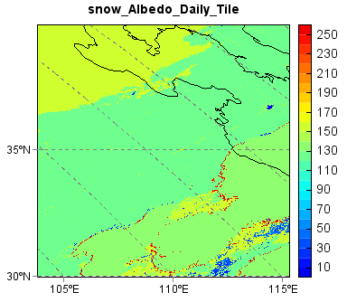
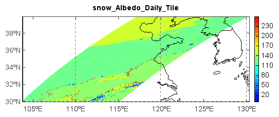

MODIS snow data - MOD10A1¶
This example code illustrates how to access and visualize a MODIS snow albedo (MOD10A1) data. The MODIS land products are produced and distributed in adjacent non-overlapping tiles that are approximately 10 degrees square (at the equator). Most of the higher resolution MODIS land products are produced in the Sinusoidal tile grid.
f = addfile('D:/Temp/Hdf/MOD10A1.A2010365.h27v05.005.2011002103013.hdf')
vname = 'snow_Albedo_Daily_Tile'
data = f[vname][:,:]
axesm(projinfo=f.proj, griddx=30, griddy=30, gridline=True)
#axesm(griddx=30, griddy=30, gridline=True)
geoshow('country', edgecolor='k')
levs = arange(0, 100, 5)
layer = imshow(data, 20, proj=f.proj)
title(vname)
colorbar(layer)
axism()
Zoom to data tile extent:
The data plot can be reprojected to LongLat projection if no projection assigned in
Axesm() function.
f = addfile('D:/Temp/Hdf/MOD10A1.A2010365.h27v05.005.2011002103013.hdf')
vname = 'snow_Albedo_Daily_Tile'
data = f[vname][:,:]
#axesm(projinfo=f.proj, griddx=5, griddy=5, gridline=True)
axesm(gridline=True)
geoshow('country', edgecolor='k')
levs = arange(0, 100, 5)
layer = imshow(data, 20, proj=f.proj)
title(vname)
colorbar(layer)
axism()

Zoom to data tile extent:
